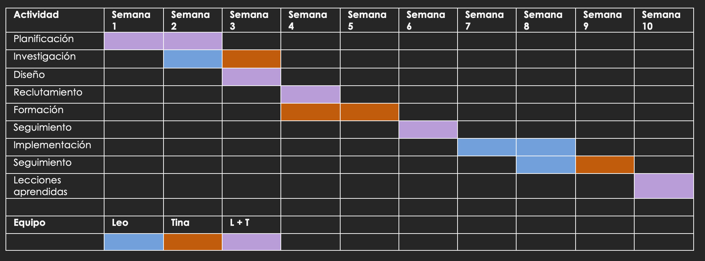

En el mundo de la gestión de proyectos, una herramienta que ha demostrado ser invaluable es el "Diagrama de Gantt". Este gráfico visual se ha convertido en un estándar ampliamente utilizado para planificar, coordinar y monitorear el progreso de las tareas en proyectos de diversa índole. El Diagrama de Gantt proporciona una representación clara y concisa de las actividades a lo largo del tiempo, permitiendo a los equipos de proyecto entender la secuencia de tareas, sus dependencias y la duración prevista para cada una.
El principal propósito del Diagrama de Gantt es proporcionar una representación visual clara y concisa de la progresión de las tareas a lo largo del tiempo en un proyecto. Esta representación permite a los equipos y stakeholders entender fácilmente:
La duración prevista de cada tarea y su ubicación en la línea de tiempo.
Las interdependencias entre las distintas tareas.
El flujo general del proyecto y las etapas clave.
El progreso real en comparación con el planificado.
De esta manera, el Diagrama de Gantt actúa como una herramienta de comunicación esencial, mejora la coordinación y asignación de recursos, y facilita la identificación temprana de desviaciones o retrasos. Su utilidad se extiende a la toma de decisiones informadas y a la adaptación flexible ante cambios que puedan surgir durante la ejecución del proyecto. En definitiva, el Diagrama de Gantt es un aliado valioso para una gestión eficiente y efectiva de proyectos.
Componentes
🕒Línea de Tiempo:
En el eje horizontal dividida en días, semanas o meses.
📑Tareas:
Representadas con una barra horizontal.
⌛️Duración de las Tareas:
Con la longitud de la barra y en la línea de tiempo se ve su inicio y finalización.
📊Leyenda:
Símbolos o colores que representen diferentes tipos o estados de tareas, como completadas, en progreso o pendientes.
🏷Etiquetas y Nombres:
Describiendo el contenido de cada tarea.
🌟Hitos:
Fechas de los objetivos o los puntos de control notables de un proyecto.
🔁Dependencias:
Relaciones entre tareas mediante flechas o líneas indicando la secuencia en la que deben realizarse.
🙋🏽Asignaciones:
Representa los recursos (personas, equipos, equipos) asignados a las tareas o los nombres de las tareas. (Variable)
Ventajas
Visualización Clara del Cronograma:
Facilita la comprensión general del proyecto al presentar las tareas de manera gráfica y secuencial en el tiempo.
Secuencia y Dependencias:
Ayuda a evitar retrasos y malentendidos al mostrar claramente el orden en que las tareas deben llevarse a cabo.
Asignación de Recursos:
Evita la subutilización o sobrecarga de recursos al indicar cuándo y dónde se necesitan en el proyecto.
Estimación de Tiempos:
permite planificar con precisión y anticipar posibles retrasos al mostrar la duración de cada tarea.
Seguimiento del Progreso:
A medida que el proyecto avanza, el diagrama de Gantt se actualiza para reflejar el progreso real de las tareas. Esto permite identificar desviaciones en el plan original y tomar medidas correctivas.
Identificación de Superposiciones:
Facilita la resolución de problemas al mostrar claramente los momentos en los que las tareas pueden entrar en conflicto.
Facilita la Planificación a Largo Plazo:
Permite la gestión eficiente de proyectos extensos al mostrar cómo se desarrollarán las actividades con el tiempo.
Referencia Histórica:
Proporciona un modelo valioso para proyectos similares en el futuro, basado en lecciones aprendidas y experiencias previas.
Desventajas de utilizar el diagrama de Gantt
Aunque sea una herramienta clave para la gestión de proyectos, también tiene ciertas desventajas. Las más importantes son las siguientes:
La configuración puede llevar mucho tiempo:
Configurar un diagrama de Gantt para un proyecto complejo puede ser complicado y consumir mucho tiempo.
Complejidad en proyectos grandes:
En proyectos grandes con muchas tareas interdependientes y recursos compartidos, el diagrama de Gantt puede volverse complicado y difícil de interpretar. La sobrecarga de información puede llevar a confusiones y dificultades para comprender la relación entre las tareas.
Falta de flexibilidad:
Una vez que se establece un diagrama de Gantt, puede ser complicado de ajustar de manera precisa, especialmente si hay muchas tareas y dependencias involucradas. Esto puede ser un problema en proyectos que experimentan cambios frecuentes o imprevistos. retrasos y adelantos en las tareas.
No muestra las relaciones de dependencia de manera clara:
Si bien el diagrama de Gantt puede representar las dependencias entre tareas, no siempre es fácil identificar las interdependencias complejas o entender cómo un retraso en una tarea podría afectar otras tareas y el proyecto en su conjunto.
No refleja eficientemente la carga de recursos:
La longitud de una barra de tareas del diagrama de Gantt muestra la cantidad de tiempo que puede tomar finalizar una tarea. Pero esa extensión no indica los recursos específicos que requiere una tarea de este tipo. Algunas tareas con barras cortas (que representan plazos cortos) pueden requerir recursos significativos. Algunas tareas con barras largas pueden requerir recursos mínimos. El diagrama de Gantt puede ser engañoso a la hora de representar la cantidad de trabajo y recursos necesarios. Por lo tanto, para asignar y supervisar correctamente los recursos, es posible que deba utilizar otras herramientas además del diagrama de Gantt.
No designan prioridades:
Los diagramas de Gantt se centran en presentar las tareas en un proyecto, el orden de esas tareas y el tiempo aproximado que se tarda en completarlas. Los gráficos no muestran la prioridad de las tareas concretas que debe realizar para que el proyecto sea un éxito. Con tal omisión, es posible que los miembros del equipo no entiendan esas prioridades de la manera en que deberían.
Enfoque en el tiempo más que en las tareas:
El enfoque principal del diagrama de Gantt es mostrar la duración y la secuencia temporal de las tareas. Esto puede llevar a que los equipos se centren demasiado en los plazos y no lo suficiente en la calidad de las tareas o en la eficiencia general del proceso.
Ejemplo

Para culminar voy a compartir un ejemplo de uso de un diagrama de Gantt
Supongamos que tenemos las siguientes tareas:
Requerimientos del cliente
Diseño de la interfaz
Desarrollo del backend
Desarrollo del frontend
Pruebas y depuración
Entrega final
Creariamos un diagrama de Gantt, en el eje x, colocariamos las tareas a relizar, y en el eje y, los tiempos de cada tarea.
Cada una de esas tareas, se representaria en una barra que va desde el dia de inicio hasta el dia de culminacion.
En este caso, colocariamos los "requerimientos del cliente" en el dia 1 y 2, diseno de la interfaz, del dia 3 al 6, desarrollo del backend, del dia 6 al 10, y asi sucesivamente con cada tarea.
Esto nos va a ayudar a visuzalizar cada tarea, y tener presnete los tiempos de cada una y del equipo en general.